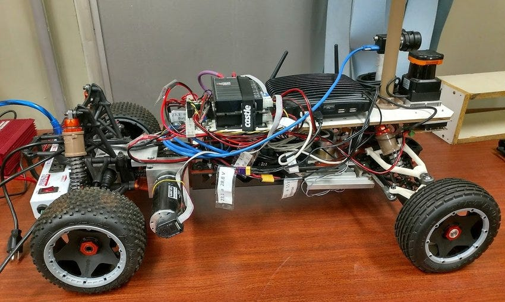
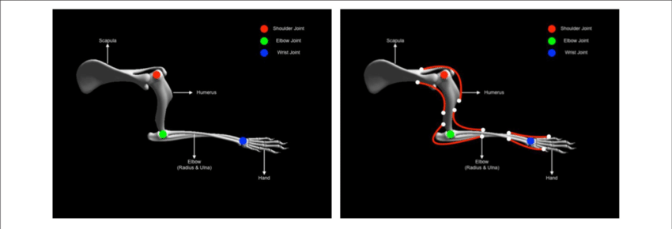
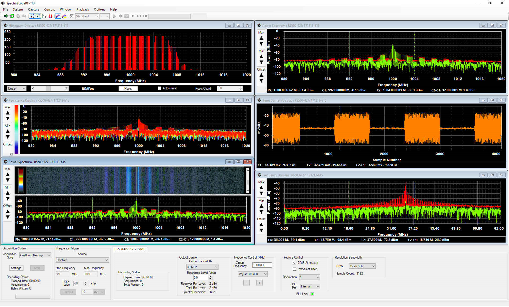
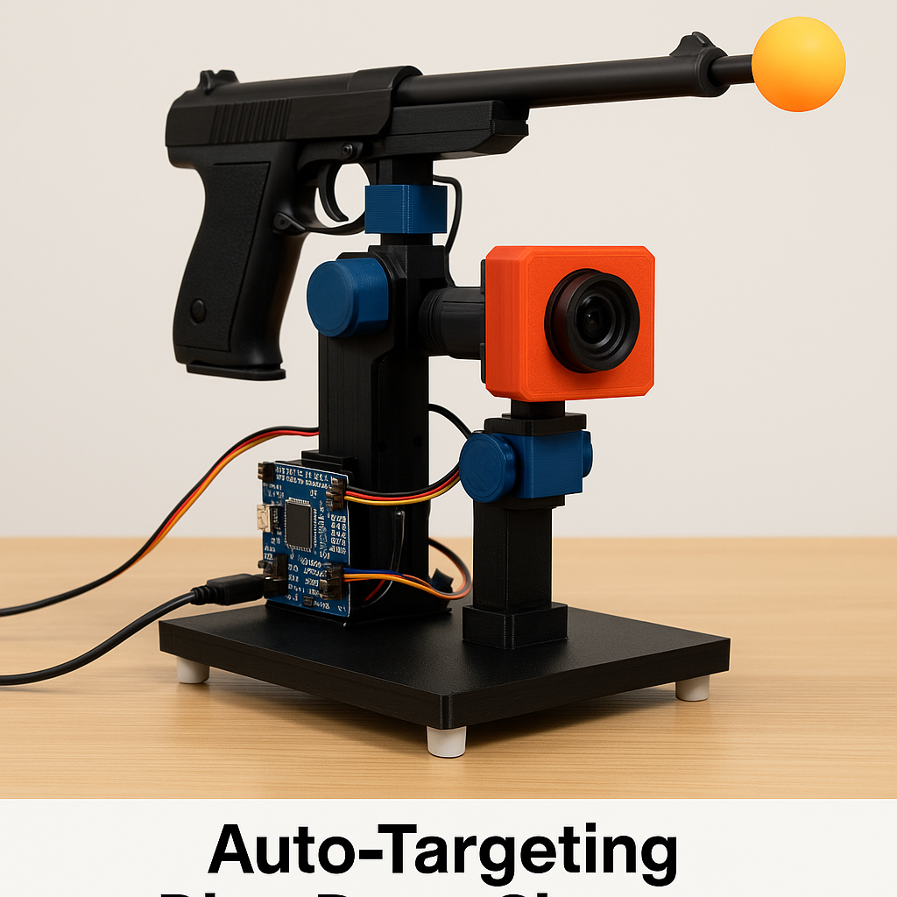
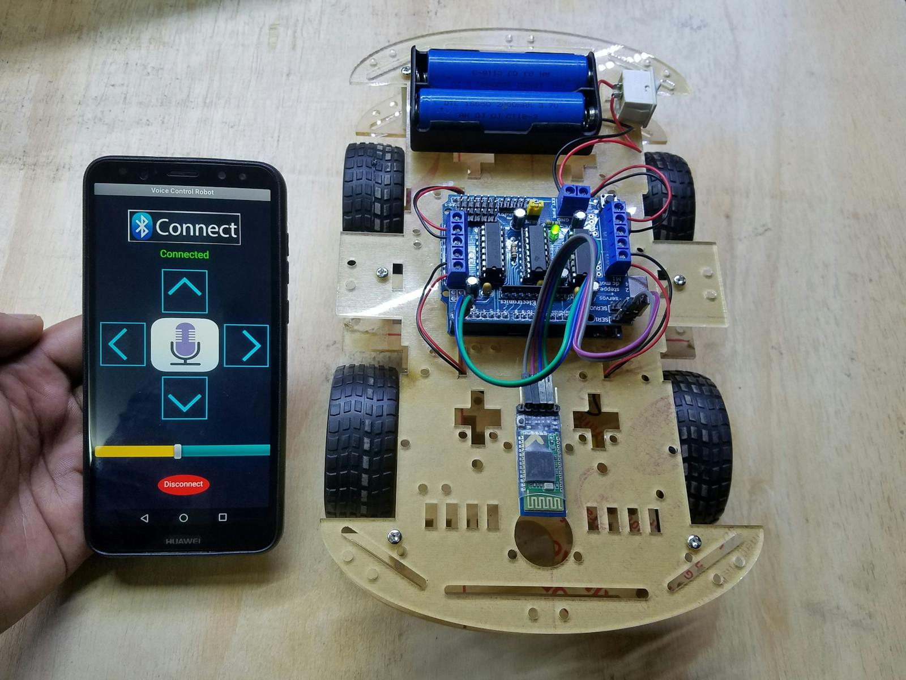

2025 · Fireworks AI Platform
Built a schema-first, auditable KYC document understanding pipeline on Fireworks AI in 3 days, with production-minded scaling paths (serverless/on-demand/batch) and human-review gating for low-quality inputs. The system processes passport and driver's license images through Llama 3.2 11B Vision with structured JSON outputs, implementing deterministic rules for risk assessment, confidence-based routing, and comprehensive corner case handling (blur, glare, rotation, low resolution). Designed with extensibility, privacy compliance, and trade-off analysis for real-world FSI deployment.

2021 · Cornell University
Developed a mobile robot integrating obstacle avoidance and vision-based path tracking. It autonomously navigates environments, detects coins using onboard sensors and collects them through precise motor control and imaging feedback.

Sep 2020 – May 2022 · Cornell University
Established a protocol using a three-point bending device to apply mechanical load to metatarsal bones in live mice while simultaneously monitoring intracellular Ca2+ dynamics in osteocytes using a genetically encoded fluorescent calcium indicator. Multiphoton fluorescence microscopy was used for real-time cellular imaging.

2020 · University of Kentucky
Built a real-time signal acquisition and demodulation device to intercept airborne EM signals. The system was coupled with GNU Radio and MATLAB for signal classification and analysis under Linux environment.

2019 · University of Kentucky
Designed an AI-powered robotic system that identifies and locks onto moving targets, then launches ping pong balls via dynamic motor calibration and prediction-based aiming algorithms.

2019 · University of Kentucky
Created a system that activates motors via spoken commands. Integrated LabVIEW and MATLAB with a neural network classifier to process voice features and convert them into real-time control signals.